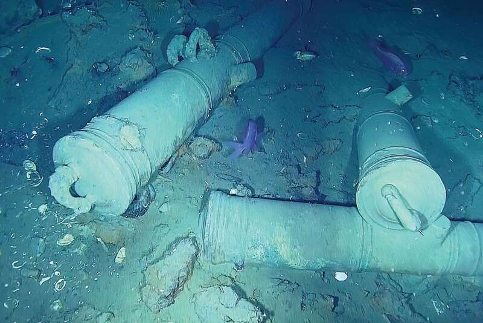
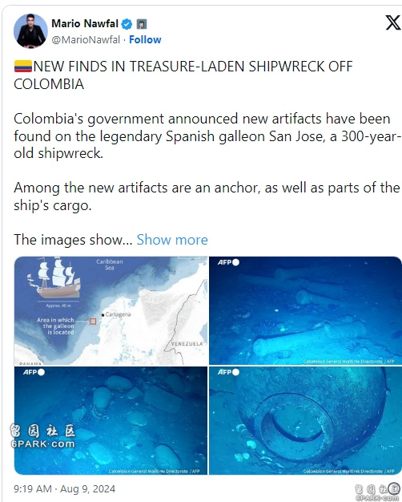

2024年5月10日，哥伦比亚海军在水下勘探过程中看到了圣荷西号西班牙帆船残骸的大炮。 （路透社）
18世纪初遭到英国海军击沉的纪西班牙大帆船（Galleon）圣荷西号（San José）的残骸，素有沉船界的「圣杯」之称，船上载有数吨的黄金和银币，价值估计高达6596亿元，沉没地点位于哥伦比亚海岸外，周五（9）再度发现了新的文物。
隶属西班牙海军的圣荷西号，1708年在前往哥伦比亚卡塔赫纳港（Port of Cartagena）时遭到英国海军击沉，它的残骸首次发现于2015年，但首次机器人探索直到2024年5月才开始。据估计，船上藏有价值高达160亿英镑（约合新台币6596亿元）的宝藏。研究人员表示，这次的发现是一组「前所未有的考古证据」。

根据哥伦比亚人类学和历史研究所的最新声明，新发现的文物包括一个船锚、玻璃瓶和一个便盆。圣荷西号所携带的财宝是历史上失落在海洋中的最大宗之一，包括箱子里的翡翠和约200吨的金币。
当时这艘船正在运送这些珍贵货物给西班牙国王，是要用来资助西班牙与英国的战争用的，然而，船上近600名船员随着船只一起在加勒比海域沉没。
负责探索残骸的机构在声明中表示：「这次探索的结果揭示了一组前所未有的考古证据，极大地扩展了我们的知识。」哥伦比亚人类学和历史研究所所长凯塞多（Alhena Caicedo）表示：新发现包括「一系列我们以前未见过的材料」。
她说：「其中包括一些木头的碎片或船体的部分，至少是一些指示当时有木材存在的残余，以及可能的锚痕迹。」她补充道：「其他发现的物品包括钉子、瓶子、罐子和一些玻璃和陶瓷等不同材料。」
哥伦比亚总统裴卓（Gustavo Petro）想在2026年打捞这艘沉船，并列为优先事项。然而，关于这些财宝的所有权仍存在争议。
西班牙主张圣荷西号是一艘「国家船只」，因为它在被击沉时属于西班牙海军，其船上物品受联合国公约保护，而哥伦比亚并未加入该公约。但玻利维亚的原住民声称这些财宝是从他们那里掠夺而来的。
此外，美国的打捞公司「海洋搜索舰队」（Sea Search Armada）也将哥伦比亚告上了联合国常设仲裁法院，索赔78亿英镑（约新台币3217亿元），并声称是他们公司在40多年前首次发现这艘船的。